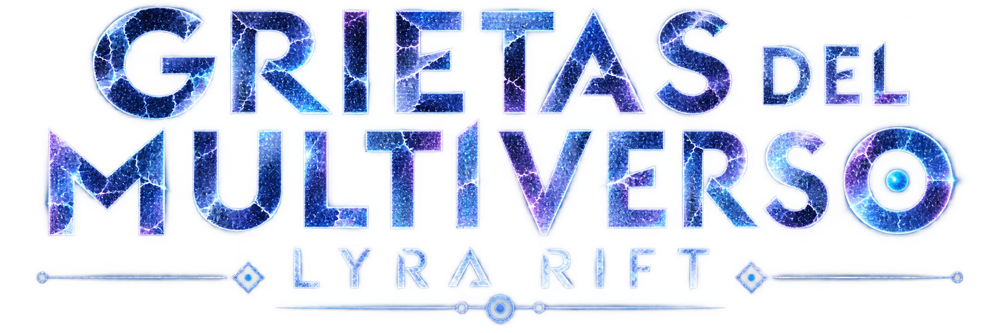

Cada decisión crea un mundo. Aquí se rompen todos.

Once voces · Seis países · Una sola constelación
Antes de entrar
Recibe la próxima señal
Las grietas no avisan. Nosotros sí: nuevos relatos, universos que se abren y lo que Lyra Rift decida compartir del archivo.
¿Quién es Lyra Rift?
Responde con un año: el que se repite a sí mismo.
Quién es Lyra Rift
No es una persona. Es lo que persiste cuando once voces distintas, sin haberse puesto de acuerdo, empiezan a contar el mismo universo.
Lyra Rift no escribe. Recibe.
Lo que sigue es lo que decidió que merecía ser leído.
El archivo
Once señales recibidas
Cada punto es un universo que alguien documentó antes de que se cerrara. Acércate a uno y escucha lo que llegó de él.
Pasa el cursor sobre una señal
El libro
Grietas del Multiverso es el primer volumen de las Crónicas de la Fractura, dentro de la Colección Ragnarok de Valhalla Ediciones.
Once voces de autores de España, Argentina, México, Venezuela y Colombia, reunidos bajo una misma premisa: todo está conectado, y la grieta lo sabe.
ISBN 979-13-99215-01-4
El objeto
Para verlo hace falta sintonizar la frecuencia. Es una hora: la que dicen que se abren las grietas.